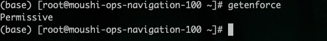
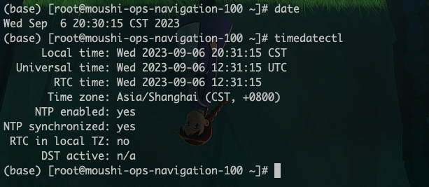

linux 基础配置
一、务器系统配置初始化脚本
当拿到一台 linux 服务器，需要对 linux 做一些操作，来保证后续部署的服务能够高效稳定的运行。
1.1 关闭 swap 分区
临时关闭
swapoff -a
永久关闭
打开文件/etc/fstab
vim /etc/fstab
找到swap分区将其注释掉即可
#/dev/mapper/cl-swap swap swap defaults 0 0
重启机器
reboot
1.2 关闭 selinux
查看 selinux 状态
getenforce

临时关闭
setenforce 0
重启系统后还会开启
永久关闭
sed -i 's/SELINUX=enforcing/SELINUX=disabled/g' /etc/selinux/config
sed -i 's/SELINUX=enforcing/SELINUX=disabled/g' /etc/sysconfig/selinux
重启机器
reboot
关闭后查看 selinux 状态
getenforce

1.3 关闭防火墙
关闭防火墙命令如下
systemctl stop firewalld && systemctl disable firewalld
1.4 主机名配置
拿到主机后，需要给服务器配置一个主机名，就像每个人有自己的名字一样
配置主机名命令如下
hostnamectl --static set-hostname sirius
1.5 ssh 配置
关闭 DNS 反查 使用了 dns 反查，这种情况下当 ssh 登录某个 IP 时，系统会试图通过 DNS 反查相对应的域名，如果 DNS 中没有这个 IP 的域名解析，则会等到 DNS 查询超时才会进行下一步，消耗很长时间。
关闭 dns 反查命令如下
sed -ie "/UseDNS/s/yes/no/g;/UseDNS/s/#//g" /etc/ssh/sshd_config
修改 ssh 超时时间
vim /etc/ssh/sshd_config
修改下面两项
ClientAliveInterval 60
ClientAliveCountMax 30
重启 ssh 服务
systemctl restart sshd
1.6 修改系统时区
查看系统时区是否正常

上述图片是已经修改正常状态
修改系统时间命令如下
mv /etc/localtime /etc/localtime.bak
-s /usr/share/zoneinfo/Asia/Shanghai /etc/localtime
然后输入上图命令即可验证时间即可